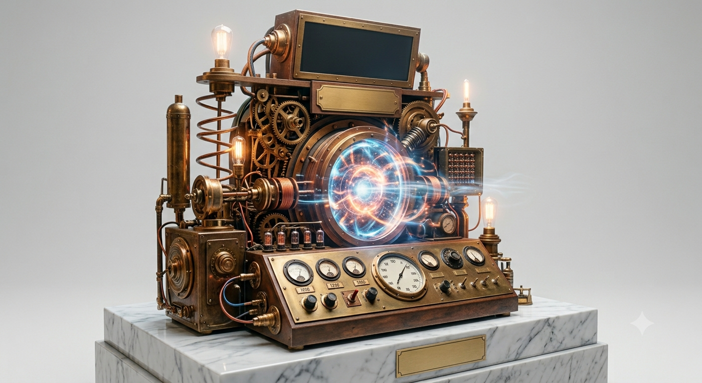
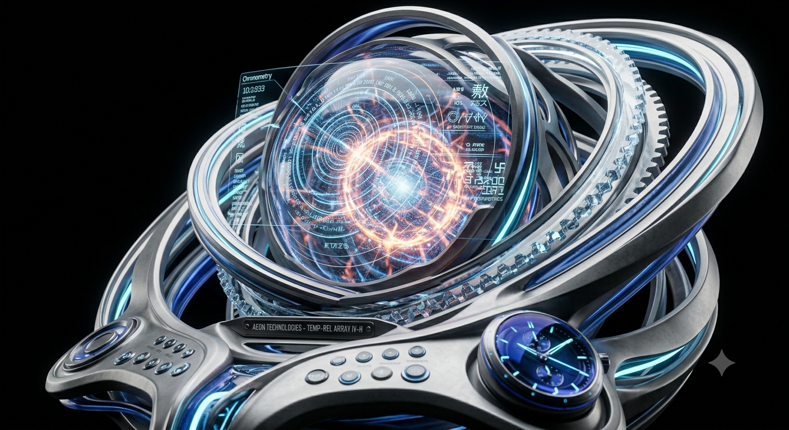
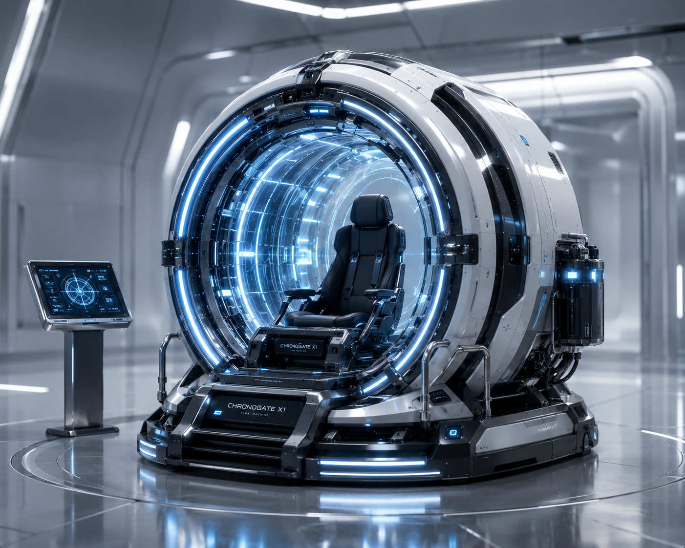
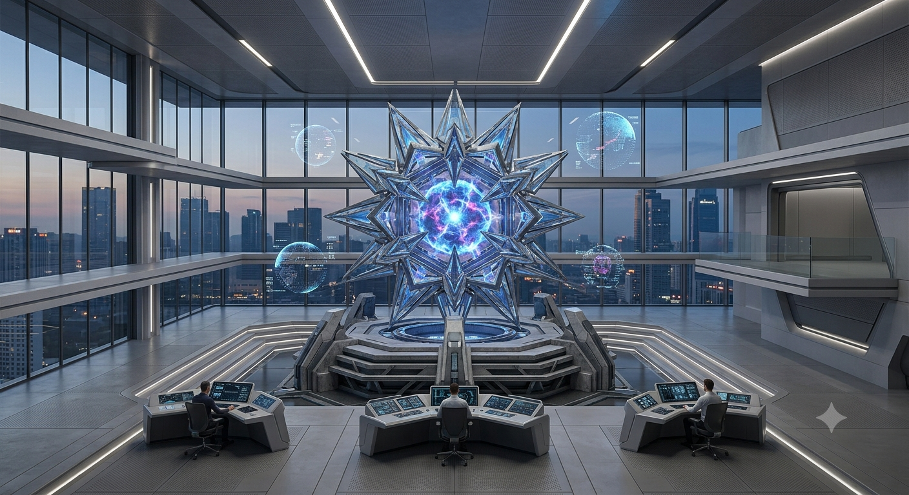

Product
- 製品情報 -
-

- TM01 Oldres（2008）
- 世界で初めて製品化されたタイムマシン。時空粒子力学者であるジョン・ウィックマン氏との共同開発製品です。当時にしては高い安定性を持っており、現在でも安価であるため物体転送の実習などで使われます。
- ￥1250000
-

- TM02 Telepo（2028）
- 20年の歳月を経て誕生した、当社設立の始まりともなった物体転送タイムマシンです。粒子状態が不安定な物体も転送することができ、長い跳躍時間を誇ります。
- ￥4500000
-

- TM03 Theworld（2040）
- 初の人類の時間移動を可能にしたタイムマシン。この技術によって我々は更に高度な発展を遂げました。利用者の体には強い負荷がかかるため、訓練を受けた時空飛行士用のパイロットタイムマシンです。
- ￥25000000
-

- STAIRWAY（2072）
- アメリカのケープカナベラルに設置されている、世界最大のタイムマシンです。最大跳躍時間12000年のこの巨大施設は、現在存在するタイムマシンの中で最も優れたものです。時空間喪失症の被害を最小限に抑え、次元干渉の危険性の少ないのが特徴です。
- 非売品